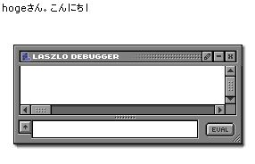
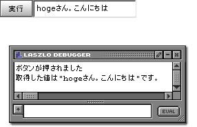

|
 |
|||||
S2LaszloとはLaszloで作られたリッチクライアントアプリケーションからSeasar2で作られたサーバアプリケーションを呼び出すためのライブラリです。 ダウンロードS2Laszloは下記からダウンロードしてください。 セットアップ準備するものS2Laszloでは下記のものが必要になります。
設定ファイルweb.xmlに必要な項目を下記に示します。
<filter>
<filter-name>s2filter</filter-name>
<filter-class>org.seasar.framework.container.filter.S2ContainerFilter</filter-class>
</filter>
<filter-mapping>
<filter-name>s2filter</filter-name>
<url-pattern>/*</url-pattern>
</filter-mapping>
<servlet>
<servlet-name>LPS</servlet-name>
<servlet-class>org.openlaszlo.servlets.LZServlet</servlet-class>
</servlet>
<servlet>
<servlet-name>s2servlet</servlet-name>
<servlet-class>org.seasar.framework.container.servlet.S2ContainerServlet</servlet-class>
<load-on-startup>1</load-on-startup>
</servlet>
<servlet>
<servlet-name>s2laszloServlet</servlet-name>
<servlet-class>org.seasar.laszlo.servlet.S2LaszloServlet</servlet-class>
</servlet>
<servlet-mapping>
<servlet-name>LPS</servlet-name>
<url-pattern>*.lzx</url-pattern>
</servlet-mapping>
<servlet-mapping>
<servlet-name>LPS</servlet-name>
<url-pattern>*.lzo</url-pattern>
</servlet-mapping>
<servlet-mapping>
<servlet-name>s2servlet</servlet-name>
<url-pattern>/s2servlet</url-pattern>
</servlet-mapping>
<servlet-mapping>
<servlet-name>s2laszloServlet</servlet-name>
<url-pattern>/s2laszlo/*</url-pattern>
</servlet-mapping>
ここで定義されている1つのフィルターと3つのサーブレットは下記の役割を果たします。
使い方dataset、JavaRPCともにJava側のつくりは同じになります。 Javaまず、Laszloからの問い合わせの受け口となるJavaクラスとdiconファイルを作成します。
package sample;
public class HelloService {
private String person;
public void setPerson(String person) {
this.person = person;
}
public String hello(){
return person + "さん。こんにちは";
}
}
<components namespace="sample" >
<component name="helloService" class="sample.HelloService" instance="request" >
<meta name="s2laszlo"/>
</component>
</components>
S2LaszloではLaszloから要求時に渡されるパラメータはコンポーネントのセッターを利用し受け取ることができます。 上記の例では、personにLaszloからのパラメータがセットされた後に、helloメソッドが実行されることになります。 ただし、インスタンス属性がrequestになっていることに注意してください。 S2Laszloでは、コンポーテントのインスタンス属性がprototype・requestの場合のみ、 パラメータを受け取れるようになっています。 これは、その他の長い生存期間を持っているインスタンス属性(session,singleton等)では、 正しい動作が得られない場合があるためです。ただし、パラメータをセットできないというだけであって、 パラメータを必要としない処理についてはsingleton等の指定も可能です。 つぎに、メタ情報としてs2laszloが指定されていることに注目してください。 S2Laszloでは、この指定のあるもののみがLaszloからのアクセスを許可しています。 最後に、これにHTTPでアクセスしてどのようなレスポンスが返却されるか確認してみましょう。 ブラウザで書きURLにアクセスします。
この結果は下記のとおりです。 <?xml version="1.0" encoding="UTF-8"?> <string>hogeさん。こんにちは</string> このXMLはXStreamで生成されています。そのため文字列をあらわす<string> で文字列が表現されています。ちなみに、返却値としてこの例では文字列で示していますが、 Bean(DTO)、Listなどを返却することも可能です。 Laszlo:dataset上で作成したコンポーネントへ、Laszloのdatasetを利用してアクセスしてみましょう。 以下にLZXファイルを示します。
<?xml version="1.0" encoding="UTF-8"?>
<canvas debug="true">
<dataset name="hello" request="true"
src="http://localhost:8080/(コンテキスト名)/s2laszlo/sample.helloService/hello?person=hoge">
</dataset>
<text datapath="hello:/string/text()"/>
</canvas>
次にこれを実行した結果を表示します。 Laszlo:JavaRPC次に上で作成したコンポーネントへ、LaszloのJavaRPCを利用してアクセスしてみましょう。 以下にLZXファイルを示します。
<?xml version="1.0" encoding="UTF-8"?>
<canvas debug="true">
<include href="s2laszlo/library.lzx" />
<view>
<simplelayout axis="x" />
<button>
実行
<method event="onclick">
Debug.write("ボタンが押されました");
var t = { component: 'sample.helloService', method: 'hello' }
var r = { ref: parent.result, attribute:'text', invokeObject:this, invokeMethod:'success' };
var e = { invokeObject:this, invokeMethod:'error'};
var s2l = new s2laszlo( t, r, e ); // ----(1)
var param = { person:'hoge' };
s2l.invoke(param); // ----(2)
</method>
<method name="success" args="str">
Debug.write('取得した値は"' + str + '"です。');
</method>
<method name="error" args="errorObject">
Debug.write('エラーが発生しました。');
Debug.write('Exceptionクラス:' + errorObject['exception'] );
Debug.write('Exceptionメッセージ:' + errorObject['exceptionMessage']);
</method>
</button>
<edittext name="result" width="150"/>
</view>
</canvas>
ここではJavaRPCを直接使うのではなく、それをラッピングしたs2laszloを使っています。 この例では、ボタンのonlickイベントに対して処理を組み込んであります。 (1)では、s2laszloクラスのコンストラクタをいくつかのオプションをつけて生成しています。
(2)で実際にコンポーネントの実行のためのパラメータを渡し処理を実行しています。 先ほど示したJavaのセッターに対応したpersonに値を指定したオブジェクトを引数として、 s2laszloのinvokeメソッドを実行します。これにより、コンポーネントが非同期で実行されます。 以下に、これを実行した時の画面を示します。  |
||||||||||
| Copyright© 2005-2006, The Seasar Foundation and the others. All rights reserved. |